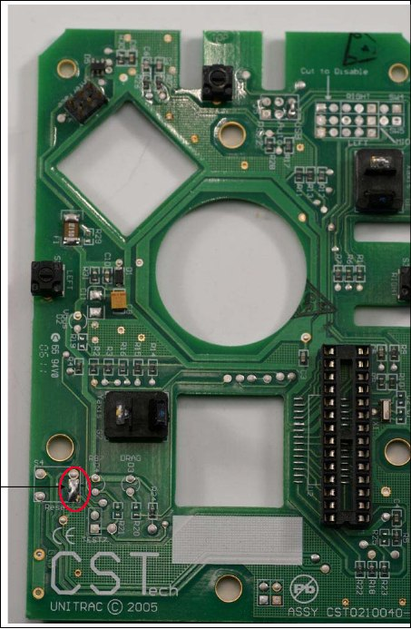

Quick guide to CST/Xkeys PC-trac/O-trac/Kidtrac
O-trac and PC-trac seem to be the same trackball model made by different companies due to buyout. It is a classic trackball model without a scrolling functionality.
There are a couple varieties of this trackball, described in detail here. I have CST1150 model, I would be thankful for inputs from people with Pro models to make this guide more comprehensive.
One can find manuals here, although they do not provide too much useful data.
This is a short guide to using and setting up this trackball.
Middle click
By default, the middle click is terrible. If you click it once, it goes
into drag-hold mode which is useless, and when you hold it for 2.5s it
will explode go into scroll mode. To leave the scroll mode,
press any other key. I bet there are people who prefer this scheme.
To fix this, you need to solder to bridge two pins on the board. Then, you will have normal middle click and you can start using the trackball properly.
Here is a picture of the two pins in questions. They are on the right side of the reset square in the bottom corner of said square.

Scrolling
After you have resolved this, now you need scrolling. To get this functionality, you can go two ways.
- enable auto-scrolling in applications that provide it (i.e. Firefox)
- enable it system-wide
To enable it system-wide, follow this guide, just remember to change the scroll button to 2 (middle) or 3 (right). I have tested this and found it not useful for me, prefer per-application as this blocks moving the mouse while having the middle or right button pressed.
Accelaration
By default, acceleration is pretty low. For linux, install xinput, and then run following commands
xinput # to get the list of devices
xinput set-prop 'CST CST USB UNITRAC' 'libinput Accel Speed' 1.0 # to set the accel speed, adjust the device name if it is different
Keep in mind that this only sets it for current session and currently plugged in devices, unplugging the device and plugging it back in will disable the setting. To have this set permanently either set it up in xorg.conf or use a script which checks if device is plugged in and then sets the accelaration speed to the correct one.
An example of a working script (using entr):
cd /dev/input/; while sleep 0.1; do echo by-id | entr -d xinput set-prop 'CST CST USB UNITRAC' 'libinput Accel Speed' 1.0 ; done
Put this one in auto-run, so it will work fine.
take me back to index